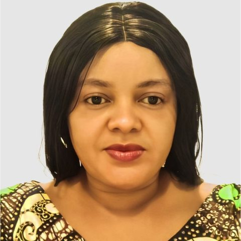

Angelina Ugben
Chairperson, Board of Trustees · Founder & President
Angelina Ungianumbeye Ugben is a globally respected Nigerian disability rights advocate, climate leader, and social entrepreneur working at the intersection of disability inclusion, sustainable development, and women’s empowerment. She is widely recognized for her bold leadership in advancing the participation of persons with disabilities (PWDs) in climate action, inclusive governance, and economic development across Africa and beyond.
She is the Founder and Chief Executive Officer of the Global Disabilities Green Initiative (GDGI), officially launched in June 2025 at Nigeria’s National Assembly Complex, committed to empowering 10,000 persons with disabilities as Green Leaders by 2030 through programs in renewable energy, sustainable agriculture, climate resilience, and green entrepreneurship. Under her leadership, GDGI is transforming marginalization into opportunity, redefining the role of PWDs in Africa’s green economy and global climate solutions.
Angelina also serves as Executive Director of the Inclusive Skills Development Initiative (ISDI), leading programs that equip women with disabilities with practical skills, leadership capacity, and access to economic opportunities across diverse sectors. As National Social Welfare Secretary of the Joint National Association of Persons with Disabilities (JONAPWD), Nigeria, she contributes directly to shaping inclusive public policy and national development strategy. Through GDGI–JONAPWD collaboration, she has led nationwide tree-planting campaigns and the distribution of solar lamps to students with disabilities.
Beyond advocacy, she is a visionary social entrepreneur: Founder of God’s Habitation International and Angels Enterprise Development (AED), enterprises empowering persons with disabilities, particularly women and girls, with business skills, entrepreneurship training, and access to sustainable livelihoods. A 2023 alumna of the Tony Elumelu Foundation Entrepreneurship Programme, she continues to demonstrate the economic potential and leadership capacity of entrepreneurs with disabilities.
A passionate champion for gender-responsive governance, Angelina is a strong advocate for Nigeria’s Reserved Seats Bill, which seeks to increase women’s representation in parliament, including women with disabilities, and consistently emphasizes that inclusive leadership is essential to addressing challenges such as insecurity, unemployment, and social inequality. She engages at national and international levels, including United Nations workshops, climate policy dialogues, and collaborations with the International Labour Organization (ILO), UNESCO, government institutions, civil society, and development partners including Connected Development (CODE), bridging disability inclusion, environmental justice, and women’s leadership.
Her recognition includes a place among the 100 Most Influential Women in Africa by Women Who Win Africa, the Challenge Champion and Heroes Award (2024), and an Honorary Doctorate in Philosophy from United Graduate College and Seminary International (USA).